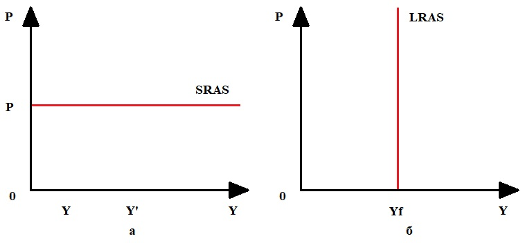

Второй определяющей частью в модели AD-AS является совокупное предложение.
Совокупное предложени - это объём товаров и услуг, производимых в экономике в целом в данном году и предложенных предприятиями на рынке населению, государству и друг другу при данном уровне цен.
Величина совокупного предложения представляет собой объем выпуска, который все производители готовы (намерены) произвести и предложить к продаже на рынке при каждом возможном уровне цен. Поэтому можно построить кривую совокупного предложения (кривую AS ), показывающую зависимость величины совокупного предложения от уровня цен.
Совокупное предложение и его величина могут быть изображены графически с помощью кривой совокупного предложения а) в краткосрочном периоде; б) в долгосрочном периоде (см. рис. 5.2.а, б).
а) В краткосрочном периоде (при фиксированных ценах) представляет собой прямую, параллельную оси Y.
б) В долгосрочном периоде (при гибких ценах) представляет собой прямую, параллельную оси Р, отсекающую на оси Y отрезок, равный потенциальному ВВП.

В отличие от кривой совокупного спроса, которая отражает обратную зависимость между величиной совокупного спроса и уровнем цен и поэтому всегда имеет отрицательный наклон, соотношение между величиной совокупного предложения и уровнем цен зависит от периода времени и определяется скоростью адаптации (adjustment) всех цен к изменению рыночной конъюнктуры (соотношения спроса и предложения на рынке), т.е. скоростью уравновешивания рынков. Поэтому кривая совокупного предложения имеет разный вид в краткосрочном и долгосрочном периодах. Критерием деления периодов на краткосрочный и долгосрочный в макроэкономике является изменение цен на ресурсы (в отличие от микроэкономики, в которой этим критерием выступает изменение количества ресурсов).
В соответствии с трактовкой вопросов о степени гибкости цен и о способности рынка к восстановлению равновесия (к самоуравновешиванию) в макроэкономике существует два подхода к анализу макроэкономических процессов, две макроэкономические модели: классическая и кейнсианская, отличающиеся друг от друга предпосылками, основными положениями, теоретическими выводами и практическими рекомендациями [20, с. 49 - 50].
Таким образом, мы установили связь между уровнем цен и величиной совокупного предложения. Графически изменение совокупного предложения под воздействием роста цен изображается перемещением по кривой совокупного предложения вправо и вверх. Изменение уровня цен - это главный фактор, влияющий на величину совокупного предложения. Существуют и другие, так называемые неценовые факторы совокупного предложения. При изменении этих факторов также изменяются издержки производства. К важнейшим из неценовых факторов совокупного предложения относятся: изменение цен на ресурсы; изменение производительности; изменение правовых норм.
Графически воздействие неценовых факторов на совокупное предложение изображается сдвигом кривой совокупного предложения влево или вправо.